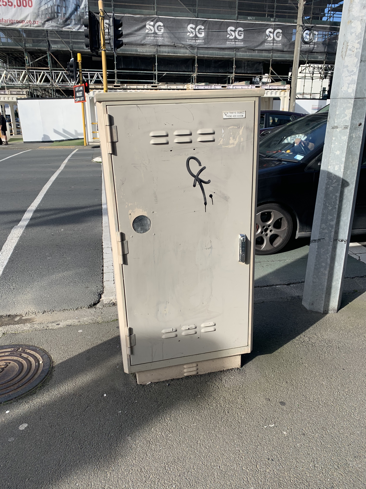
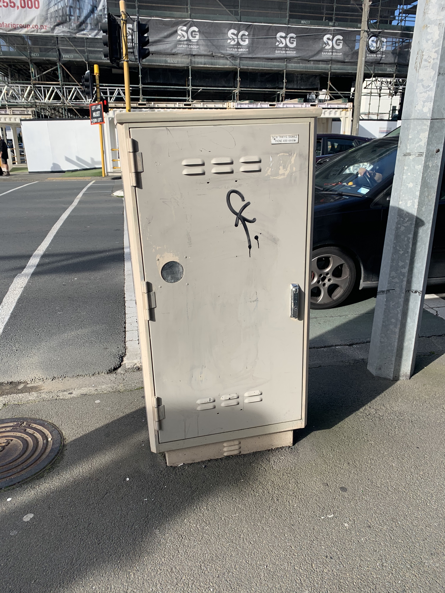

Outside
In our day to day lives, we don't realise how many items require internet. It is easy to spot different power boxes and pipes that protect the cables going into the ground. They are more obvious connections as they photos were taken from one journey.
 



Underground
In our day to day lives, we don't realise how many items require internet. As well as walking past routes, powerboxes and secruity cameras, Most connections happen underground. We can access most of these points underground and seen in my footpath marking photos, these cables work like hidden bus networks